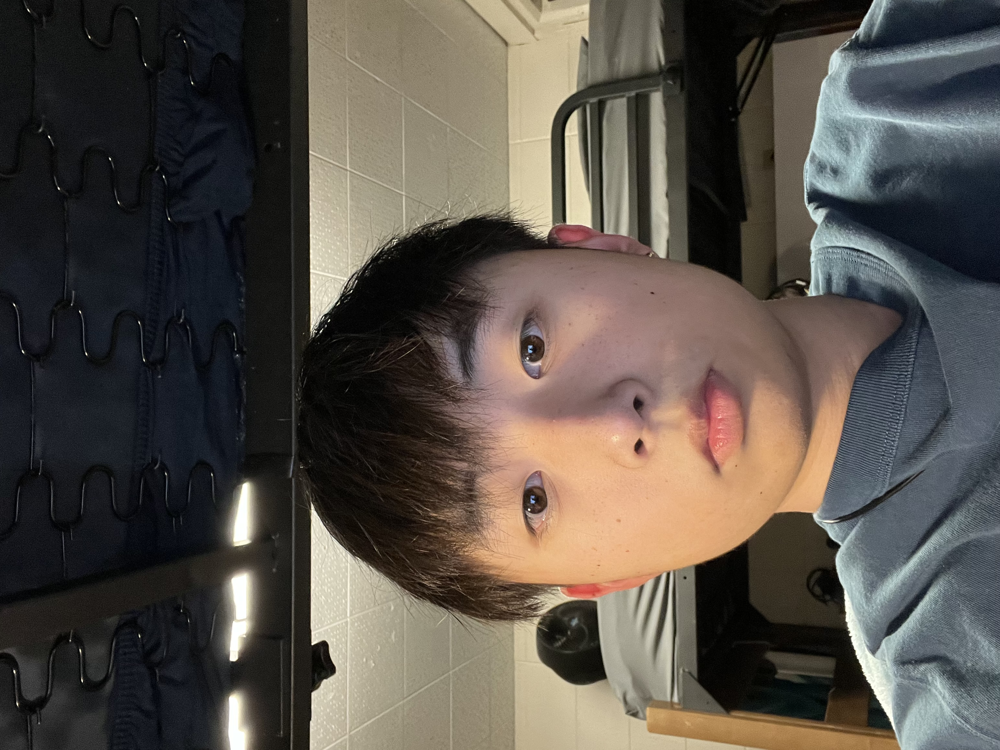

About
My name is Brian and I was born on May 30, 2005 in Pleasanton, California. I graduated from Foothill Highschool and getting a comupter science degree in Rose-hulman university. I am interested in coding and enjoy reading in my past time.
I have been coding for 5 years and know how to code in java and python. This website is my portfolio to show off my skills and tell a little about me.